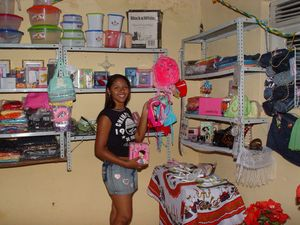

O Jovem Empreendedor de Pernambuco iniciou em 2008. No final do curso, os alunos que elaborarem os melhores planos, terão oportunidade de abrir seu próprio negócio em 2009. Portanto, não existem casos de sucesso em Pernambuco. O JEP já esteve presente em diversos estados e conta com muitas empresas bem sucedidas montadas pelos nossos alunos. Conheça as histórias, inspire-se e elabore o seu plano de negócio. O seu empreendimento poderá ser o próximo caso de sucesso.
“Lembre-se! Ser empreendedor é transformar o sonho em realidade”.
|
Nome: Wendell Kenedy Tavares da Silva Estado: Rio Grande do Norte
Concluinte do Ensino Médio, ex-estagiário do Banco do Brasil, entrou de cabeça no programa Jovem Empreendedor. Com a finalidade de melhorar o padrão de vida da sua família. Os pais viviam apenas do aluguel de uma pequena casa no bairro. Com o projeto, adquiriu conhecimentos e habilidades para desenvolver seu negócio próprio.
No início não foi fácil, participar de uma seleção de 1.000 jovens para ter acesso ao financiamento, porém sua perseverança venceu.
Hoje, Wendell Kenedy, montou com a mãe uma sorveteria, atendendo com muita dedicação e simpatia a todos que freqüentam seu estabelecimento em Nova Natal. |
|
Nome: Valmiran Ferreira Estado: Alagoas
Valmiran sempre teve vontade de ter uma loja de bicicletas e trabalhar. Com o JEP teve a oportunidade de alcançar o seu objetivo. No início, seu tio comprou as peças para a loja e o jovem abriu uma oficina de bicicletas.
O estudante afirma que sem o programa nada seria possível. Futuramente, pretende ampliar o seu negócio. |
|
Nome: Francisco Lucivan de Souza
Francisco Lucivan, jovem que sempre demonstrou os seus objetivos. Em sua residência já existia um ponto comercial.
Com o incentivo do Programa Jovem Empreendedor, montou um empreendimento no ramo de informática. O estabelecimento oferece os seguintes serviços: xerox, digitação, internet, confecção de carimbos, entre outros. |
|
Nome: André Francisco Belo Lucena Estado: Alagoas
Desde pequeno, André trabalhou com a mãe no preparo e entrega de doces. Sempre sonhou em ampliar o empreendimento, com o JEP teve a oportunidade de alcançar o seu objetivo.
Após ser contemplado no programa, o estudante melhorou a qualidade dos produtos e atendimento ao cliente. |
|
|
Nome: Antônia Kallyane Rodrigues
Desde criança, Antônia Kallyane se interessou por moda. Ao tomar conhecimento do programa Jovem Empreendedor, na escola onde estudava, decidiu realizar a inscrição. Participou da turma, elaborou o plano de negócio e foi contemplada com o financiamento.
Atualmente, é proprietária de uma loja de confecções, realizou um sonho antigo. |
|
Nome: Marco Aurélio Estado: Alagoas
Marco Aurélio, um jovem determinado que nunca desistiu dos seus sonhos e objetivos. Com o programa conseguiu abrir o seu negócio de fotografia.
Segundo ele, com o JEP aprendeu: como estocar, quem são os melhores fornecedores, onde vender seu material, entre outras coisas. O JEP foi um aliado forte para montar o seu negócio. |
|
Nome: Janimara Édila de Souza
Sob a inspiração e o incentivo decisivo da avó, que trabalha como vendedora ambulante, Janimara foi contemplada com o financiamento do programa e montou uma loja de variedades que vende desde perfumes até brinquedos. O pequeno negócio funciona em sua própria residência.
Determinada e comunicativa, pensa em obter um novo empréstimo quando quitar o que recebeu do programa Jovem Empreendedor. Quer ampliar seu negócio. |
 |